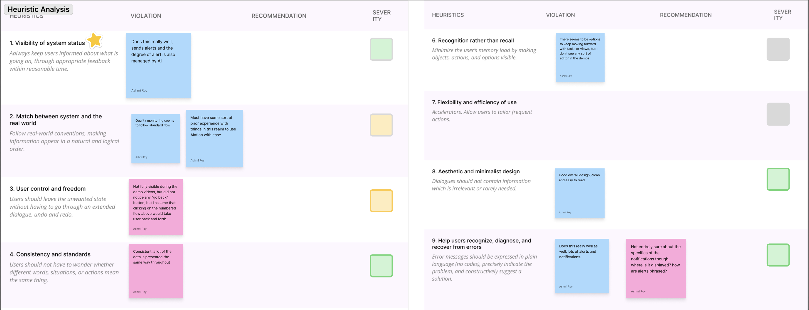

End-to-end UX · AI Product · January to May 2026
Redesigning journey map maintenance for a CX platform
Confidential and proprietary details have been removed or anonymized to protect client information. Screens and research findings are presented at a high level only.
Journey maps are living documents that need to evolve as customer experiences change, products update, and new data emerges. But on this platform, there was no system to alert users when their content became outdated. Personas aged out of date. Insights no longer reflected current metrics. Touchpoints drifted from reality.
Users relied on manual reviews and indirect signals to catch stale content, which led to inefficiency, disconnected data, and eroding trust in the maps themselves.
How might we help journey map owners identify and address outdated content, so their maps stay accurate, trustworthy, and actionable over time?
The client is a customer journey management platform that helps organizations understand their customers by building, analyzing, and maintaining journey maps. The platform already supported journey creation, analytics integration, and AI-assisted content generation — but maintaining those journeys over time was a gap.
Customer experience strategists and journey owners
Using journey maps to align product decisions
Mapping end-to-end service experiences
Organizations managing multiple journey maps
Contributed to desk research, competitive analysis, and user interviews to understand AI capabilities, current pain points, and how similar platforms handle content maintenance. This grounded our design decisions in real user needs.
Conducted a heuristic evaluation against Nielsen's 10 usability heuristics on a competing platform, identifying UX violations, surfacing severity ratings, and generating design recommendations that informed our own direction.

Heuristic evaluation identifying UX violations and severity ratings across Nielsen's 10 heuristics on a competitor product
Led 3 of 6 semi-structured interviews directly with real users of the platform. We explored their frustrations, what was working well for them, and where they saw room for opportunity. These conversations surfaced unmet needs that directly shaped our design direction in later phases.
Contributed to high-fidelity screen design across multiple rounds of iteration. Helped translate concept sketches and wireframes into polished, interactive Figma prototypes that communicated the AI maintenance agent experience clearly to sponsors and users.
Helped synthesize findings across 6 usability tests conducted on our redesigned prototype. Participants were given task-based questions to work through, and we analyzed their responses to identify friction points and iterate on the design.
Led presentations directly to the client's CEO and VP of Product, communicating design decisions, research rationale, and prototype progress. Translated complex UX concepts into clear business value for non-design stakeholders.
The final design introduces two complementary AI capabilities. Together they reduce manual maintenance, improve visibility into outdated content, and keep users in control at every step.
The agent continuously monitors journey maps, personas, and insights for signs of stale content, flagging changes before they compound into larger inaccuracies.
Every recommendation is backed by a clear rationale, so users understand why something is flagged and can make informed decisions about whether to update it.
Flexible controls keep users in charge. The agent assists but never overwrites, respecting user judgment while reducing the manual burden of maintenance.
User interviews surfaced a core frustration: users had no way to know when content was outdated. Our heuristic eval confirmed a lack of system feedback as a key violation. The solution: a proactive AI layer that monitors journey data and surfaces recommendations automatically, while giving users full control to approve, deny, or snooze every suggestion.
Users told us they wanted to ask questions about their journey and get direct answers without digging through data. The Intelligence Agent is fully reactive and user-initiated, letting people engage with AI on their own terms through natural conversation linked to specific map elements.